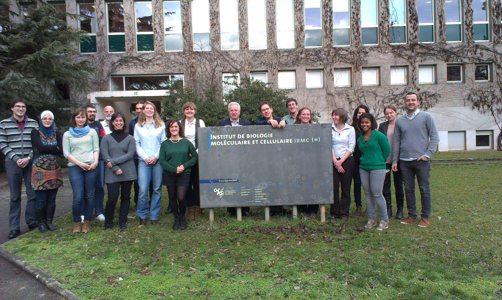
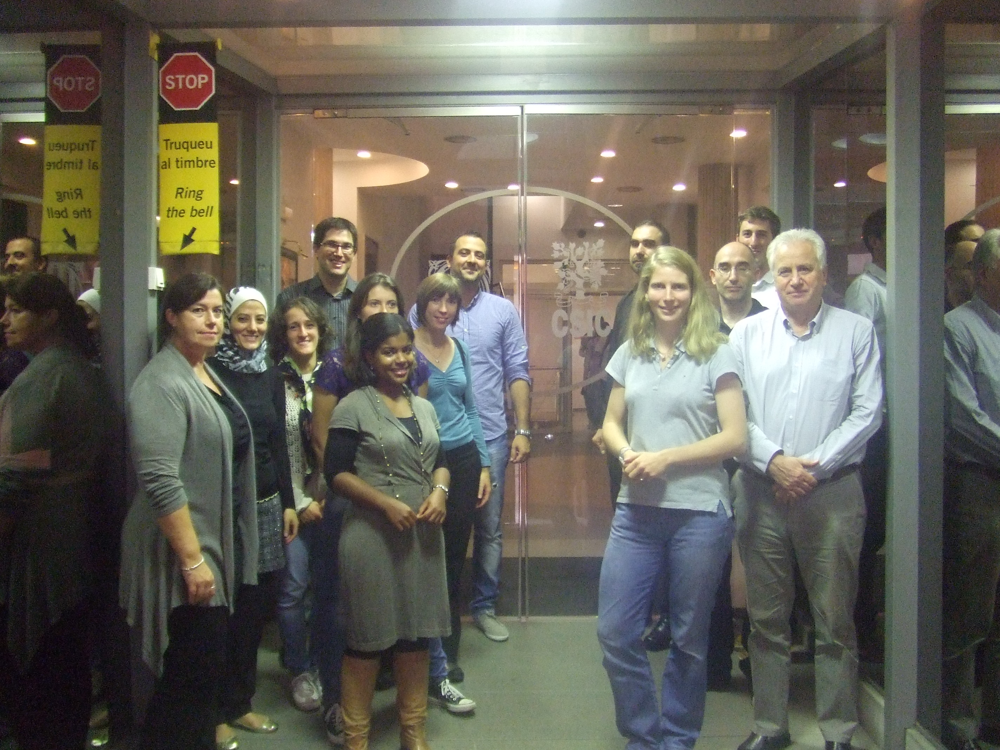

Second RADDEL network meeting; Strasbourg (France) 08/02/2013
- Created on 28 February 2013
The second RADDEL network meeting took place on the 8th of February 2013 at the Institut de Biologie Moleculaire et Cellulaire (IBMC) in Strasbourg (France). The meeting was attended by 20 people from 10 different partners, including 10 ESR fellows already working in the project. Gerard Tobias as project coordinator from CSIC gave a small introduction to the new fellows about RADDEL, and then each newly recruited researcher gave a small introduction about themseves to the network partners. The fellows also presented the results obtained so far in their research projects, and there was a discussion about the scientific aspects of the project and the work to carry out in the next few months. In the afternoon session, a Supervisory Board meeting took place, where aspects related with the implementation of the project were discussed.

From left to right: Gerard Tobias (Project coordinator, ICMAB-CSIC); Khuloud Al-Jamal (KCL), Agnieszka Kuczynska (ESR, UNITS), Alberto Bianco (CNRS), Maurizio Prato (UNITS), Belén Ballesteros (ICN), Martin Kalbac (HIPC), Reida Rutte (ESR, UOX), Cinzia Spinato (ESR, CNRS), Magdalena Kierkowicz (ESR, ICMAB-CSIC), Jean-Claude Saccavini (CIS BIO), Markus Martincic (ESR, ICMAB-CSIC), Maxime Bourgognon (ESR, KCL), Anne Forney (ESR, UOI), Cecilia Menard-Moyon (CNRS), Ana Santidrián (ESR, HIPC), Ania Servant (UCL), Elzbieta Pach (ESR, ICN), Jorge Pérez (Project manager, ICMAB-CSIC).
Dr. Khuloud Al-Jamal from KCL receives the Royal Pharmaceutical Society (RPS) Science Award 2012
- Created on 05 December 2012

Dr Khuloud Al-Jamal, the winner of this year’s RPS Science Award, has been recognised for her exciting work in the field of nanomedicine. Dr Al-Jamal has extensive experience in the design and development of novel nanoscale delivery systems and her current interests involve using novel nanomaterials in therapeutic and diagnostic applications.
The RPS Science Award has a long history with previous winners invariably going on to make significant contributions in the field of pharmaceutical science. The award is presented to a pharmaceutical scientist with no more than 10 years’ experience at post-doctoral level who has a proven record of independent research and published work that shows outstanding promise.
Dr Al-Jamal delivered her RPS Award Lecture “Nanomedicines: tiny objects great hopes” on 12 September 2012 at the Academy of Pharmaceutical Sciences UKPharmSci 2012 conference in Nottingham. The award was presented to her by Helen Gordon, CEO, Royal Pharmaceutical Society.
Congratulations to Dr. Khuloud for winning the 2012 RPS Science Award!
Meeting for the COST Action TD 1004: "Theragnostics Imaging and Therapy: An Action to Develop Novel Nanosized Systems for Imaging-Guided Drug Delivery" (28-30/10/2012, London)
- Created on 29 October 2012
The annual meeting for the COST action titled “Theranostics Imaging and Therapy: An Action to Develop Novel Nanosized Systems for Imaging-Guided Drug Delivery” was held in King’s College London on October 29th-30th 2012. The meeting has been organized and hosted by RADDEL partner KCL - King´s Collegue London (Dr. Khuloud Al-Jamal: Principal Investigator for KCL in RADDEL; and Maxime Bourgognon: RADDEL ESR fellow for KCL), and more than 120 participants from all over Europe were present. A total of 45 presentations and 25 posters were delivered. You can check the programme by clicking on the following link:
First RADDEL network meeting; Barcelona (Spain) 11/10/2012
- Created on 11 October 2012
The first RADDEL network meeting took place on the 11th of October in Barcelona (Spain). The meeting was attended by 13 people from 9 different partners, including 4 ESRs already working in the project. Gerard Tobias as project coordinator gave a small introduction to the new fellows about RADDEL, and then each newly recruited researcher gave a small introduction about themseves to the network partners. The fellows also presented the results obtained so far in their research projects, and there was a discussion about the scientific aspects of the project and the work to carry out in the next few months. Finally, the project manager presented the project's webpage and the facebook profile to the attendees. In the afternoon session, a Supervisory Board meeting took place, where aspects related with the implementation of the project were discussed.

Left: Tatiana Da Ros (UNITS); Khuloud Al-Jamal (KCL); Cinzia Spinato (ESR8, CNRS); Gerard Tobias (Project coordinator, ICMAB-CSIC); Ania Servant (UCL School of Pharmacy); Sonia De Munari (ESR3, UOX); Cecilia Menard-Moyon (CNRS) and Jorge Pérez (project manager, ICMAB-CSIC).
Right: Reida Rutte (ESR4, UOX); Jean-Claude Saccavini (IBA); Dimitris Emfietzoglou (UoI); Martin Kalbac (HIPC) and Maxime Bourgognon (ESR5, KCL).
Maxime Bourgognon (ESR3) has attended the seminar: “Cancer, microRNAs, and other non-coding RNAs” (12/09/20912, UCL Cancer Institute, London)
- Created on 12 September 2012
Maxime Bourgognon (ESR3 from King´s Collegue London - KCL) has attended the following symposium held at the UCL Cancer Institute (London) on September 12th 2012:
"Cancer, microRNAs, and other non-coding RNAs"
The programme for the symposium is available in the following link: